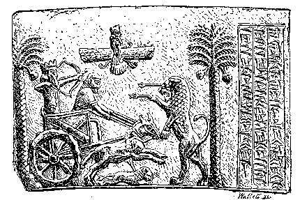

After three more days of marching, there arrived at the camp of Cyrus some deserters, who informed him that the King's army was close at hand.
He could hardly have been much surprised at the news that Artaxerxes was approaching; the only wonder was that he had tarried so long, for he had heard from Tissaphernes of the revolt of Cyrus in little more than a month from the time that the expedition had set out from Sardis.
The King had certainly expected that his brother would find some difficulty in getting through Cilicia, and that Abrocamas, with his 300,000 men, would do something more to check his progress than merely burning the boats on the Euphrates. But it was now two months since the flight of Abrocamas, and yet the King had made no effort to meet the usurper, but had allowed him to penetrate unhindered into the very heart of the empire. Cyrus had now reached the rich province of Babylonia, where the fruitful soil brought forth food in abundance, being watered by the two great rivers Tigris and Euphrates, which in this part of the country flow at a distance of only a few miles apart.
The Hellenes thought scorn of a King who could be so indolent and so irresolute, and they said, mockingly, one to another, "This is a King who can neither ride, nor drink, nor hunt, nor fight."
But Cyrus took a different view of his brother's character, for once when Clearchus asked him, "Do you think, Cyrus, that your brother will fight at all?" he answered, "By Zeus, he will. If he be the son of Darius and Parysatis, and my brother, I shall not get the crown from him without a struggle."

THE GREAT KING HUNTING.
When the news of the King's approach reached Cyrus, it was already past midnight, but nevertheless he at once held a review of his whole force, for he thought that a battle might now take place at any time.
After the review, Cyrus addressed the Hellene officers. "Men of Hellas," he said, "it is not from any scarcity of troops of my own that I have brought you hither, but because I know that you are braver and stronger than a whole multitude of Barbarians. See that you prove yourselves worthy of the freedom that you enjoy. Believe me when I say that I envy you this, and would willingly part with all my treasures to purchase it, and even with far more precious possessions. The Barbarians trust to their overwhelming numbers, and to the deafening clamour with which they charge, but if you resist them bravely, you will find them—it shames me to say so—nothing but a cowardly mob. Bear yourselves bravely, and if I conquer, I will send you back to your homes with such treasures as will make you envied by all your friends. Yet I hope that many of you will prefer to remain in my service, instead of returning to Hellas."
When Cyrus had ended his speech, a Hellene from the island of Samos answered him, saying, "There are many of us, Cyrus, who think that it is all very well in the hour of danger to promise mountains of gold, but that when the danger is past, you may forget your promises, or it may not perhaps be in your power to fulfil them."
"The empire of my father," said Cyrus, "stretches northwards to the regions where men cannot live because of the cold, and southwards to the regions where men cannot live because of the heat, and all the countries that lie between are governed by the friends of my brother. If we conquer, I will set my friends over all that land. I have less fear that I shall not have enough gifts with which to reward my friends, than that I shall not have enough friends on whom to bestow my gifts. To each of you moreover, ye officers of the Hellenes, I will give, in remembrance of this campaign, a crown of gold."
The rest of the soldiers quickly heard of the dazzling prospects held out by Cyrus, and there was not a man among them who did not long for the battle to begin. At the same time the officers were anxious that Cyrus should not expose himself, for everything depended on his escaping unhurt, and they urged him to take up a safe position behind the cavalry.
But Cyrus would not hear of such a thing, and in this he was perfectly right. In our days the general is regarded as the head of the army who has to think for all, and he would be blamed if he were to risk his life without actual necessity. But in the time of Cyrus, the general in command always took his share of the actual fighting, and would have been thought a coward if he had not been seen by friend and foe alike, in the fore-front of the battle.
The next morning the troops continued their march, drawn up in fighting order, for Cyrus expected that the two armies would meet that day. But as the day wore on, and no enemy appeared in sight, he remembered a prophecy that had been made by a Hellene soothsayer, Silanus by name, who ten days before this had sacrificed a heifer, and had afterwards prophesied that the battle would not take place within the next ten days.
The Hellenes believed that by examining the entrails, that is to say, the heart, the lungs and the liver of an animal that had been offered in sacrifice, the soothsayer could discover the will of the gods, and foretell the fate of the person for whom the animal had been sacrificed.
Cyrus had rejoiced greatly on hearing the prophecy of Silanus, for he said, "If my brother does not fight within the next ten days, he will not fight at all." And he had promised the soothsayer that if his prophecy should come true, he would give him 3,000 darics. This was now the eleventh day, and he sent for Silanus, and gave him the promised reward.
Another circumstance seemed also to indicate that the King had abandoned all idea of fighting. In the middle of the day, the army came to a newly made trench of enormous size, twenty feet only from the bank of the Euphrates, whose course they were still following. The trench was thirty feet wide and eighteen feet deep, and was said to extend for more than forty miles. It had been recently dug by the command of the Great King, and must have required the toil, night and day, for months, of many thousands of workmen. It seemed certain therefore that the enemy would not fail to make the most of a defence that had been prepared at such tremendous cost, and Cyrus approached it with considerable anxiety, for in the narrow space of twenty feet between the river and the trench, his army would be completely exposed to the arrows and darts of the enemy, whom he expected to find waiting for him on the further side.
To his extreme surprise however, when he reached the dreaded spot not a soul was to be seen behind the trench, and the army was able to pass it unharmed. There were indeed tracks of men and horses, as if troops had been stationed there, but had retreated.
Cyrus now became convinced that his brother must have given up all intention of fighting, and he began to look forward to obtaining possession of the throne without a struggle. Hitherto he had been riding on horseback, but now he dismounted and seated himself in his chariot. The army also took its ease, and marched carelessly. In order to save themselves the fatigue of carrying their heavy shields in the burning sun, the hoplites took them off, and either placed them on the baggage-wagons, or gave them to their slaves.
It was almost time to halt and prepare the midday meal when a scout came riding up at a furious gallop, his horse all covered with foam and heat. Without drawing rein, he dashed through the various groups of soldiers, straight to the presence of Cyrus, but as he passed he shouted aloud, here in Persian, there in Hellene speech, "The King comes! The King comes!"